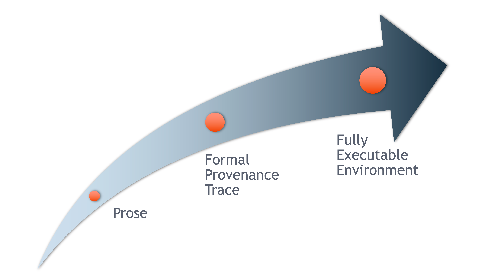

15 Session 14
15.1 Reproducible and Transparent Papers
15.1.1 Learning Objectives
In this lesson, we will:
- Discuss the concept of reproducible workflows
- Review the importance of computational reproducibility
- Review the utility of provenance metadata
- Overview how R packages are great ways to package work reproducibly
- Learn how to build a reproducible paper in RMarkdown
- Review tools and techniques for reproducibility supported by the NCEAS and DataONE
Reproducible Research: Recap
Working in a reproducible manner:
- increases research efficiency, accelerating the pace of your research and collaborations
- provides transparency by capturing and communicating scientific workflows
- enables research to stand on the shoulders of giants (build on work that came before)
- allows credit for secondary usage and supports easy attribution
- increases trust in science
To enable others to fully interpret, reproduce or build upon our research, we need to provide more comprehensive information than is typically included in a figure or publication. The methods sections of papers are typically inadequate to fully reproduce the work described in the paper.

What data were used in this study? What methods applied? What were the parameter settings? What documentation or code are available to us to evaluate the results? Can we trust these data and methods?
Are the results reproducible?
Computational reproducibility is the ability to document data, analyses, and models sufficiently for other researchers to be able to understand and ideally re-execute the computations that led to scientific results and conclusions.
Practically speaking, reproducibility includes:
- Preserving the data
- Preserving the software workflow
- Documenting what you did
- Describing how to interpret it all
Computational Provenance and Workflows
Computational provenance refers to the origin and processing history of data including:
- Input data
- Workflow/scripts
- Output data
- Figures
- Methods, dataflow, and dependencies
When we put these all together with formal documentation, we create a computational workflow that captures all of the steps from inital data cleaning and integration, through analysis, modeling, and visualization.
Here’s an example of a computational workflow from Mark Carls: Mark Carls. Analysis of hydrocarbons following the Exxon Valdez oil spill, Gulf of Alaska, 1989 - 2014. Gulf of Alaska Data Portal. urn:uuid:3249ada0-afe3-4dd6-875e-0f7928a4c171., that represents a three step workflow comprising four source data files and two output visualizations.


This screenshot of the dataset page shows how DataONE renders the workflow model information as part of our interactive user interface. You can clearly see which data files were inputs to the process, the scripts that are used to process and visualize the data, and the final output objects that are produced, in this case two graphical maps of Prince William Sound in Alaska.
From Provenance to Reproducibility

At DataONE we facilitate reproducible science through provenance by:
- Tracking data derivation history
- Tracking data inputs and outputs of analyses
- Preserving and documenting software workflows
- Tracking analysis and model executions
- Linking all of these to publications
Introducing ProvONE, an extension of W3C PROV

ProvONE provides the fundamental information required to understand and analyze scientific workflow-based computational experiments. It covers the main aspects that have been identified as relevant in the provenance literature including data structure. This addresses the most relevant aspects of how the data, both used and produced by a computational process, is organized and represented. For scientific workflows this implies the inputs and outputs of the various tasks that form part of the workflow.

Data Citation
Data citation best practices are focused on providing credit where credit is due and indexing and exposing data citations across international repository networks. In 2014, Force 11 established a Joint Declaration of Data Citation Principles that includes:
- Importance of data citation
- Credit and Attribution
- Evidence
- Unique Identification
- Access
- Persistence
- Specificity and Verifiability
- Interoperability and Flexibility
Transitive Credit
We want to move towards a model such that when a user cites a research publication we will also know:
- Which data produced it
- What software produced it
- What was derived from it
- Who to credit down the attribution stack

This is transitive credit. And it changes the way in which we think about science communication and traditional publications.
15.1.2 Reproducible Papers with rrtools
A great overview of this approach to reproducible papers comes from:
Ben Marwick, Carl Boettiger & Lincoln Mullen (2018) Packaging Data Analytical Work Reproducibly Using R (and Friends), The American Statistician, 72:1, 80-88, doi:10.1080/00031305.2017.1375986
This lesson will draw from existing materials:
The key idea in Marwick et al. (2018) is that of the “research compendium”: A single container for not just the journal article associated with your research but also the underlying analysis, data, and even the required software environment required to reproduce your work.
 Research compendia make it easy for researchers to do their work but also for others to inspect or even reproduce the work because all necessary materials are readily at hand due to being kept in one place. Rather than a constrained set of rules, the research compendium is a scaffold upon which to conduct reproducible research using open science tools such as:
Research compendia make it easy for researchers to do their work but also for others to inspect or even reproduce the work because all necessary materials are readily at hand due to being kept in one place. Rather than a constrained set of rules, the research compendium is a scaffold upon which to conduct reproducible research using open science tools such as:
Fortunately for us, Ben Marwick (and others) have written an R package called rrtools that helps us create a research compendium from scratch.
To start a reproducible paper with rrtools, run:
# install `tinytex` (See below)
# Upgrade contentid to 0.12.0
#remotes::install_github("cboettig/contentid")
# Upgrade readr from 1.3.1 to 2.0.1
#install.packages(c("readr"))
#remotes::install_github("benmarwick/rrtools")
setwd("..")
rrtools::use_compendium("mypaper")You should see output similar to the below:
> rrtools::use_compendium("mypaper")
The directory mypaper has been created.
✓ Setting active project to '/Users/bryce/mypaper'
✓ Creating 'R/'
✓ Writing 'DESCRIPTION'
Package: mypaper
Title: What the Package Does (One Line, Title Case)
Version: 0.0.0.9000
Authors@R (parsed):
* First Last <first.last@example.com> [aut, cre]
Description: What the package does (one paragraph).
License: MIT + file LICENSE
ByteCompile: true
Encoding: UTF-8
LazyData: true
Roxygen: list(markdown = TRUE)
RoxygenNote: 7.1.1
✓ Writing 'NAMESPACE'
✓ Writing 'mypaper.Rproj'
✓ Adding '.Rproj.user' to '.gitignore'
✓ Adding '^mypaper\\.Rproj$', '^\\.Rproj\\.user$' to '.Rbuildignore'
✓ Setting active project to '<no active project>'
✓ The package mypaper has been created
✓ Now opening the new compendium...
✓ Done. The working directory is currently /Users/bryce
Next, you need to: ↓ ↓ ↓
● Edit the DESCRIPTION file
● Use other 'rrtools' functions to add components to the compendiumrrtools has created the beginnings of a research compendium for us.
At this point, it looks mostly the same as an R package.
That’s because it uses the same underlying folder structure and metadata and therefore it technically is an R package. And this means our research compendium will be easy to install, just like an R package.
Before we get to writing our reproducible paper, let’s fill in some more structure. Let’s:
- Add a license (always a good idea)
- Set up a README file in the RMarkdown format
- Create an
analysisfolder to hold our reproducible paper
usethis::use_apache_license()
rrtools::use_readme_rmd()
rrtools::use_analysis()This creates a starndard, predicatable layout for our code and data and outpus that mutliple people can understand. At this point, we’re ready to start writing the paper.
To follow the structure rrtools has put in place for us, here are some pointers:
- Edit
./analysis/paper/paper.Rmdto begin writing your paper and your analysis in the same document - Add any citations to
./analysis/paper/references.bib - Add any longer R scripts that don’t fit in your paper in an
Rfolder at the top level - Add raw data to
./data/raw_data - Write out any derived data (generated in
paper.Rmd) to./data/derived_data - Write out any figures in
./analysis/figures
It would also be a good idea to initialize this folder as a git repo for maximum reproducibility:
usethis::use_git()After that, push a copy up to GitHub.
15.1.2.1 A quick tour of features for reproducibility in RMarkdown
We’re now going to walk though some of the key features that makes writing transparent articles with RMarkdown a breeze. We’ll cover:
- Loading data reproducibly
- Attractive typesetting for mathematics
- Figures, tables, and captions
- In-text citations
- Bibliographies
To do this, we will work from an already built-out example paper that illustrates these features. Start by:
- Copy the example file
paper.Rmdtoanalysis/paper/paper.Rmdin the project you built earlier - Copy the example bibliography
references.bibtoanalysis/paper/paper.Rmdin the project you built earlier - Open that
paper.Rmdfile in the reproducible paper project in RStudio - Walk through the example file to examine each of the Rmarkdown features
- Knot and view the file
download.file("https://learning.nceas.ucsb.edu/2021-09-delta/files/paper.Rmd", destfile = "analysis/paper/paper.Rmd")
download.file("https://learning.nceas.ucsb.edu/2021-09-delta/files/references.bib", destfile = "analysis/paper/references.bib")15.1.2.2 Getting PDF rendering working
By default, rrtools will create papers that are meant to be rendered either as PDF documents, or as MS Word documents. You can switch between these, but for them both to work you must have the requisite software installed on your machine. For PDF, this means you need to have a version of Tex installed with pdflatex available, which can be a difficult process on Macs and Windows. We have found that installing the R package tinytex provides a good, reliable workaround on macs and windows machines, although there can still be some futzing involved if you already have LaTEX installed, or if you don’t have sufficient permissions to install. Its beyond the scope of time available today to diagnose all of the installation issues, but hopefully tinytex will provide a path forward for you. In brief, you can install tex in your personal account using tinytex::install_tinytex(), and the restart your RStudio session, and you should have a working version of pdflatex that allows things to build the documents properly.
install.packages("tinytex")
tinytex::install_tinytex()15.1.2.3 Wrapping up with rrtools
Hopefully, now that you’ve created a research compendium with rrtools, you can imagine how a pre-defined structure like the one rrtools creates might help you organize your reproducible research and also make it easier for others to understand your work.
For a more complete example than the one we built above, take a look at benmarwick/teaching-replication-in-archaeology.
15.1.3 Reproducible Papers with rticles
Note that the rticles package provides a lot of other great templates for formatting your paper specifically to the requirements of many journals. In addition to a custom CSL file for rreference customization, rticles supports custom LATeX templates that fit the formatting requirements of each journals. After installing rticles with a command like remotes::install_github("rstudio/rticles") and restarting your RStudion session, you will be able to create articles from these custom templates using the File | New File | R Markdown... menu, which shows the following dialog:
 Select the “PNAS” template, give the file a name and choose a location for the files, and click “OK”. You can now Knit the Rmd file to see a highly-targeted article format, like this one for PNAS:
Select the “PNAS” template, give the file a name and choose a location for the files, and click “OK”. You can now Knit the Rmd file to see a highly-targeted article format, like this one for PNAS:
 While
While rticles doesn’t produce the detailed folder layout of rrtools, it is relatively simple to use the two packages together. Use rrtools to generate the core directory layout and approach to data handling, and then use articles to create the structure of the paper itself. The combination is incredibly flexible.
The 5th Generation of Reproducible Papers

Whole Tale simplifies computational reproducibility. It enables researchers to easily package and share ‘tales’. Tales are executable research objects captured in a standards-based tale format complete with metadata. They can contain:
- data (references)
- code (computational methods)
- narrative (traditional science story)
- compute environment (e.g. RStudio, Jupyter)

By combining data, code and the compute environment, tales allow researchers to:
- re-create the computational results from a scientific study
- achieve computational reproducibility
- “set the default to reproducible.”
They also empower users to verify and extend results with different data, methods, and environments. You can browse existing tales, run and interact with published tales and create new tales via the Whole Tale Dashboard.

By integrating with DataONE and Dataverse, Whole Tale includes over 90 major research repositories from which a user can select datasets to make those datasets the starting point of an interactive data exploration and analysis inside of one of the Whole Tale environments. Within DataONE, we are adding functionality to work with data in the Whole Tale environment directly from the dataset landing page.


Full circle reproducibility can be achieved by publishing data, code AND the environment.